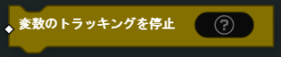

ロジック(LOGIC)
ロジック(LOGIC)
キャンセル(Abort)

ルール にある アクション の実行リストを停止します。
Ifをキャンセル(AbortIf)

与えられている ブール(Bool) がTrueである場合、 ルール にある アクション の実行リストを停止します。それ以外の場合は、 アクション の実行が継続されます。
- パラメーター
ブール(Bool)
変数をレートでトラッキング(TrackVariableAtRate)
指定された割合（数値/秒）で 変数(Variable) の値を、与えられた上限に達するまで徐々に変更していきます。
- パラメーター
変数(Variable)
数値(Number)（上限）
数値(Number)（割合）
変数を時間経過でトラッキング(TrackVariableOverTime)

時間の経過と共に（秒単位で） 変数(Variable) の数値を徐々に変更していきます。変数値は期限(インターバル)終了時に上限に到達します。
- パラメーター
変数(Variable)
数値(Number)（上限）
数値(Number)（インターバル）
スキップ(Skip)
このブロックに続く ルール 内の アクション を指定数スキップします。
- パラメーター
数値(Number)
スキップIf(SkipIf)
条件がTrueと評価された場合、このブロックに続く ルール 内の アクション を指定数スキップします。 それ以外の場合は、残りの アクション を実行し続けます。
- パラメーター
数値(Number)
ブール(Bool)
変数のトラッキングを停止(StopTrackingVariable)
進行中の 変数(Variable) のトラッキングを停止し、現在値のまま残します。
- パラメーター
変数(Variable)
待機する(Wait)

指定された 数値(Number) (秒)の間 ルール 内の アクション の実行を一時停止します。
- パラメーター
数値(Number)
Wait Until(WaitUntil)

指定された 数値 (秒)の間、または指定された条件がそのインターバルにTrueと判断された場合に ルール 内の アクション の実行を一時停止します。
- パラメーター
数値(Number)
ブール(Bool)
出力